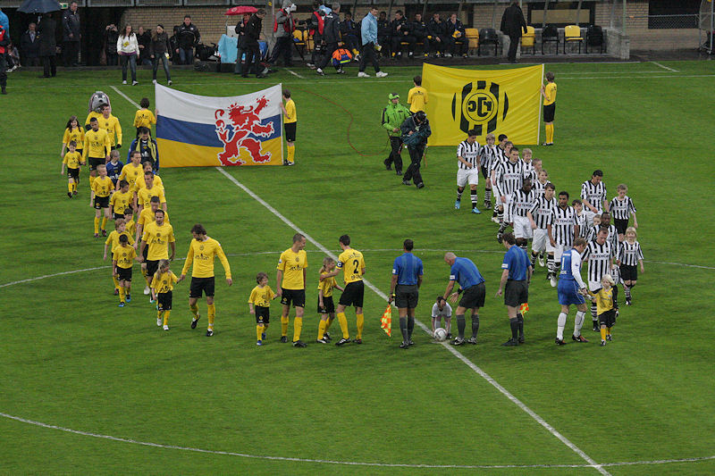
Roda en Heracles betreden het veld op een koude druilerige donderdagavond.
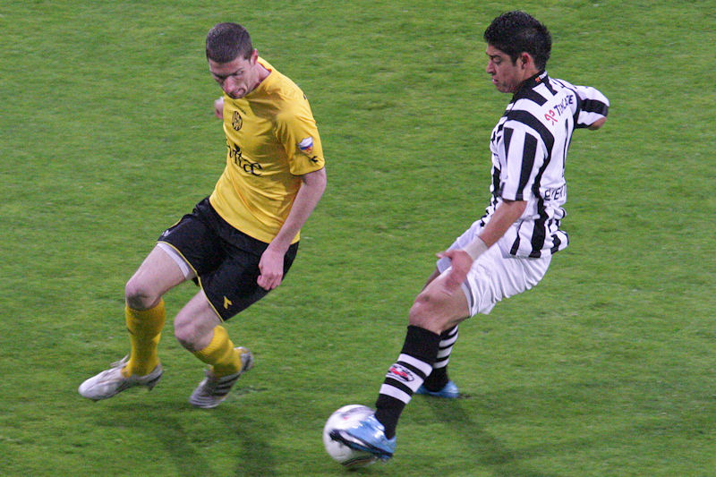
Kruiswijk bewaakt Everton.
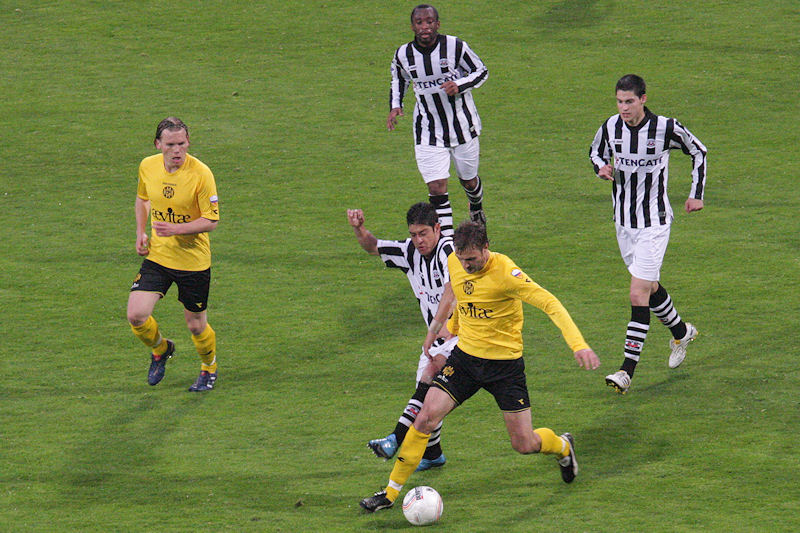
De wedstrijd gaat gelijk op. Roda heeft iets meer balbezit en beduidend meer
hoekschoppen.
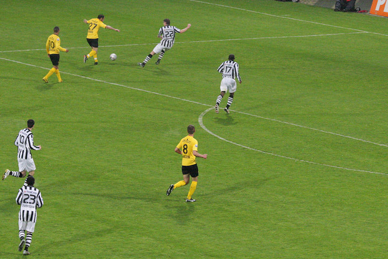
Bodor geeft een voorzet op Junker...
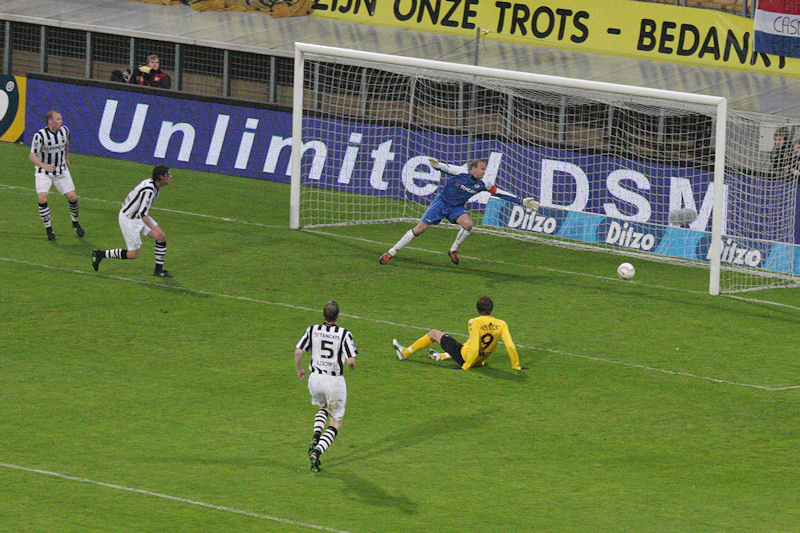
...die de bal bij de tweede paal binnenschiet: 1-0, (40').
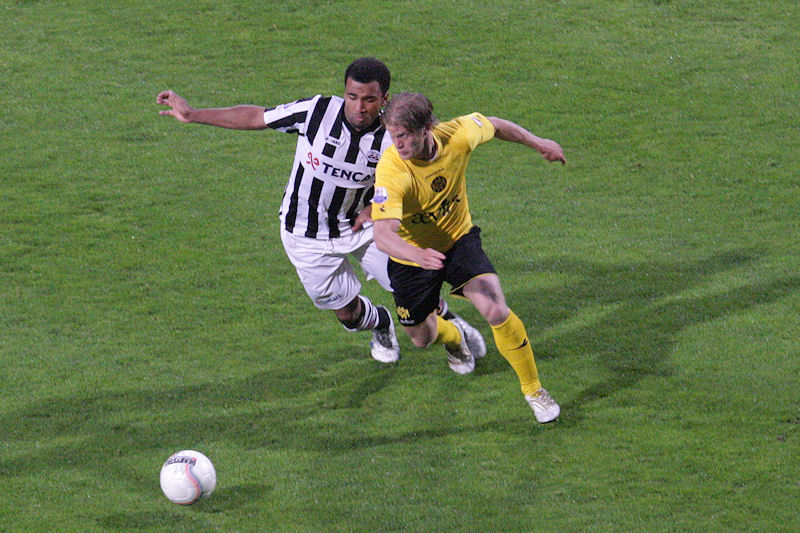
De Jong die later in het duel een vervelende arm/schouderblessure opliep.
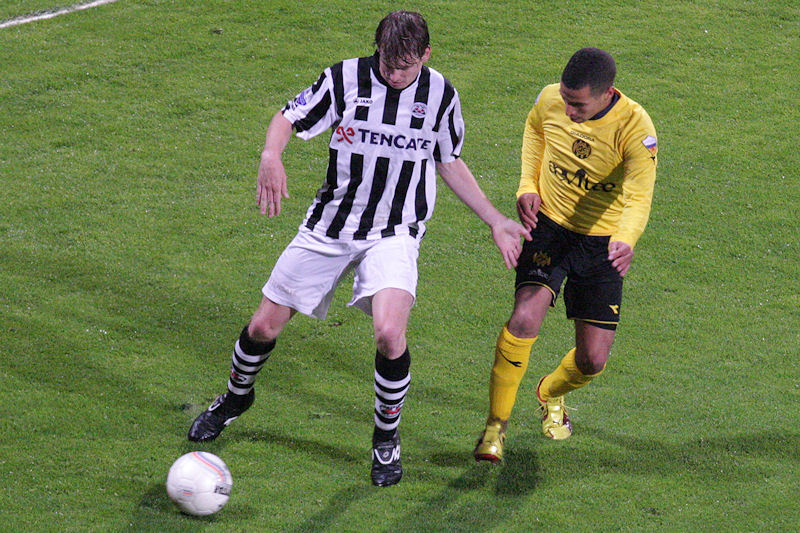
Hadouir mag net als Saeijs plaats maken voor resp. Delorge en De Wree.
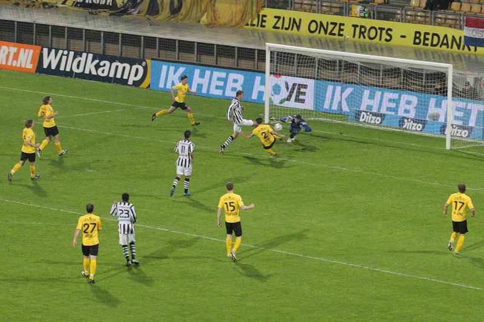
Dost ontsnapt aan De Wree en schiet voorbij de uitglijdende Tyton: 1-1,
(77').
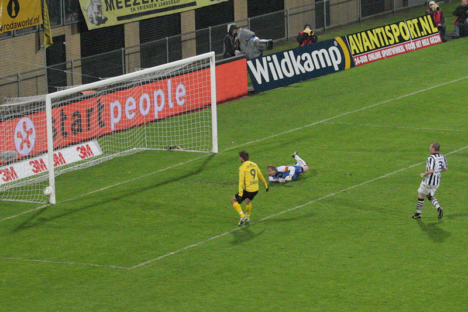
Bal op de paal van Junker.
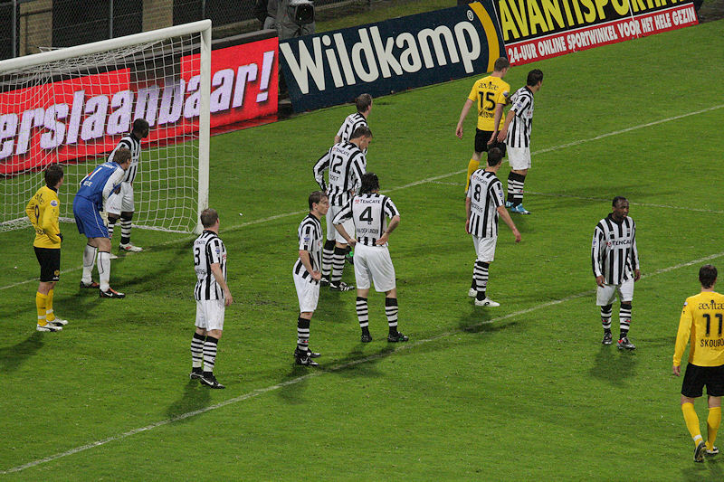
De laatste corner van Roda in de extra tijd.
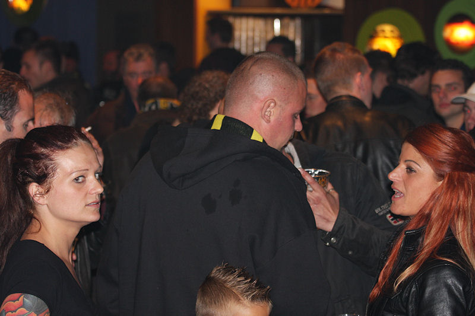
Het was nog redelijk druk in de Kickoff.
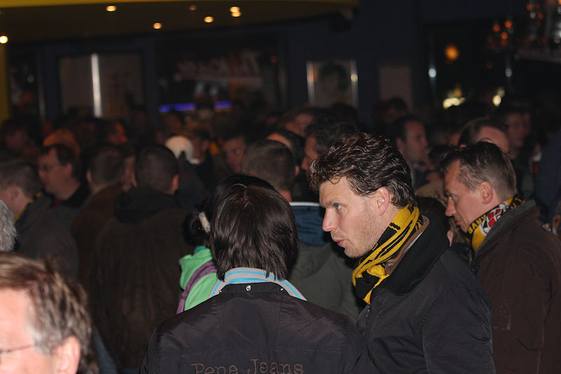